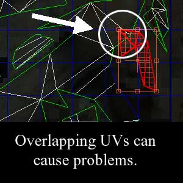
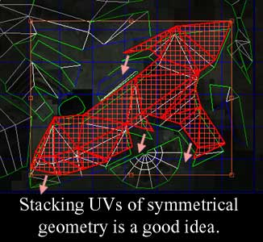

UDN
Search public documentation:
ImportingSkeletalMeshTutorialCH
English Translation
日本語訳
한국어
Interested in the Unreal Engine?
Visit the Unreal Technology site.
Looking for jobs and company info?
Check out the Epic games site.
Questions about support via UDN?
Contact the UDN Staff
日本語訳
한국어
Interested in the Unreal Engine?
Visit the Unreal Technology site.
Looking for jobs and company info?
Check out the Epic games site.
Questions about support via UDN?
Contact the UDN Staff
导入骨架网格物体指南
文档概要： 关于把带动画的网格物体和动画导入到虚幻引擎中的指南。 文档变更记录: 由Chris Sturgill (Demiurge Studios?)创建。由Laurent Delayen更新。
简介
本文档介绍了虚幻引擎3骨架网格物体的工作流程。
法线贴图
虚幻引擎3提供了使用法线贴图的功能。法线贴图通过读取高细节多边形网格物体的几何体细节并将法线保存到UV映射贴图中而生成。
 然后，在UE3中把生成的法线贴图应用到低多边形网格物体上，最终使得网格物体在多边形方面看上去比它实际外观更加复杂。然后，绑定低多边形网格物体、设置它的动画、并将它导入到虚幻引擎3中。
然后，在UE3中把生成的法线贴图应用到低多边形网格物体上，最终使得网格物体在多边形方面看上去比它实际外观更加复杂。然后，绑定低多边形网格物体、设置它的动画、并将它导入到虚幻引擎3中。
准备导出的内容
此时，在空间的同一位置处应该有一个高多边形网格物体和一个低多边形网格物体。低网格物体应该是完全展开的，并且它的UVs应该很好地平铺开。
 这点非常重要，因为SHTools的处理是基于低多边形网格物体的展开图进行的。这个过程也可以通过较新版本的3D Studio Max完成。
这点非常重要，因为SHTools的处理是基于低多边形网格物体的展开图进行的。这个过程也可以通过较新版本的3D Studio Max完成。
UVs简述
法线贴图的处理过程需要特殊的展开注意事项。 为保证最佳效果，请确保UV没有重叠。 如果所涉及到物体的几何结构是相同的，重叠堆放UV是可以的。 例如，将一个物体的不同部分重叠堆放在一起并不是一个好主意，如下图：

重叠堆放UVs是可以的，比如镜像几何体的情况，如下面的截图所示：
这些限制不必应用于高多边形网格物体，因为它根本就不需要进行贴图就可以使SHTools处理过程正常运作。生成法线贴图
通过使用插件SHTools或者3DStudio Max、 Maya 或 Softimage XSI工具进行处理，我们可以从高多边形网格物体中生成法线贴图。 本指南将逐步地对其进行简单的说明。 请注意在Max/Maya/XSI拥有它们自己的法线贴图工具之前，需要创建SHTools网格物体处理器和服务器。我们通常使用这些来创建我们的法线贴图。我们强烈推荐您使用类似于Maya 的3D建模包来创建法线贴图。
导出带动画的网格物体和动画
关于导出您的网格物体的详细过程可以在导出网格物体指南页面找到。 关于导出您的骨架绑定渲染网格物体和动画的详细信息可以在ActorXMax指南页面找到。 注意： 目前虚幻引擎3还不支持通过SHTools (上面提到的)导出法线贴图。 然而，因为动画工作流程的变化，目前支持从Maya导出动画，关于这方面的详细信息，请访问ActorXMaya指南页面。
把内容导入到引擎中
当所有的东西已经导出并准备好，现在可以通过虚幻引擎编辑器把资源导入到引擎中。 关于导入一个网格物体的详细信息可以在导入网格物体指南页面找到。 要获得关于通用浏览器和包系统的详细信息，请访问通用浏览器参考 和 虚幻引擎中的包页面。 关于导入贴图和创建材质的信息，请访问材质指南页面。
导入骨骼
要获得关于把PSK文件导入到虚幻引擎中的信息，请访问ActorX页面。
导入动画
关于如何导入动画PSA文件到虚幻引擎中的信息，请访问导入动画指南页面。
使用骨架网格物体Actors
在关卡中放置骨架网格物体的过程非常的简单：
- 在通用浏览器中选择一个骨架网格物体。
- 右击关卡，跳转到'Add Actor(添加Actor)'并选择'Add SkeletalMesh(添加骨架网格物体)'。您将会看到网格物体出现在关卡中。
有用的控制台命令
show bones - 显示用于渲染骨架网格物体的骨骼的位置。
请查看控制台命令页面来获得更多有用的命令。